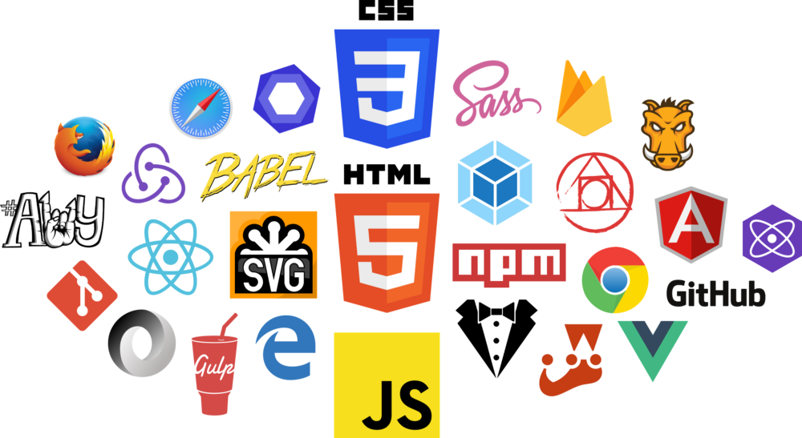

@@include('templates/header.html')
<!--DEV  удалите этот код -->
    <div id="page-preloader">
        <div class="contpre">
            <div id="circleG">
                <div id="circleG_1" class="circleG"><i class="fab fa-css3-alt"></i></div>
                <div id="circleG_2" class="circleG"><i class="fab fa-less"></i></div>
                <div id="circleG_3" class="circleG"><i class="fab fa-php"></i></div>
                <div id="circleG_4" class="circleG"><i class="fab fa-sass"></i></div>
                <div id="circleG_5" class="circleG"><i class="fab fa-html5"></i></div>
                <div id="circleG_6" class="circleG"><i class="fab fa-wordpress-simple"></i></div>
            </div>
        </div>
    </div>
    <header>
        <div class="container">
            <div class="row">
                <div class="col-md-5 col-sm-12m-auto m-auto d-flex justify-content-center">
                    <h1>LASCH-frontend</h1>
                </div>
            </div>
        </div>
    </header>
    <section id="section">
        <div class="container">
            <div class="row">
                <div class="col-sm-12">
                    
                    <p>Стартовый проект для быстрой сборки фронтенда</p>
                    <div class="sprite_png">
                        <h3>sprite:png</h3>
                        <i class="icon icon-chrome"></i>
                    </div>
                    <div class="sprite_svg">
                        <h3>sprite:svg</h3>
                        <svg class="custom-class">
                            <use xlink:href="img/sprite-svg.svg#arrow-point-to-right"></use>
                        </svg>
                    </div>
                </div>
            </div>
        </div>
    </section>
<!--DEV  удалите этот код -->
@@include('templates/footer.html')
